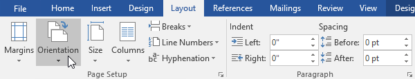
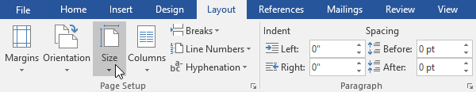
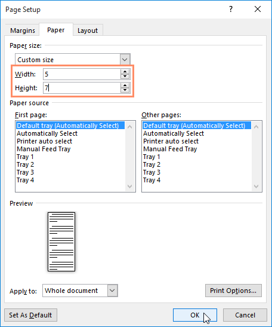
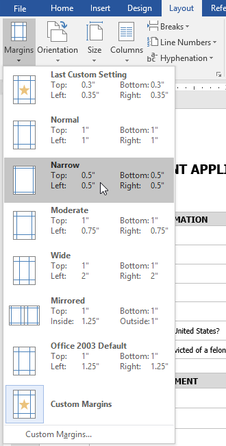
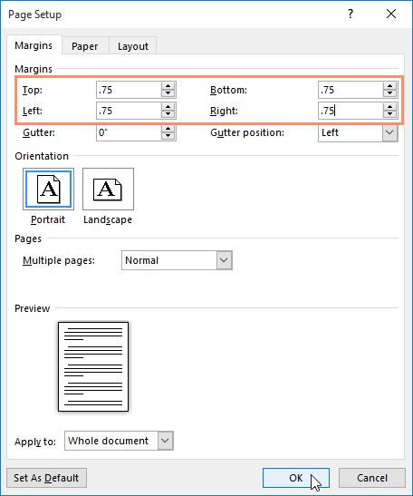

Introducere
Word oferă o varietate de opțiuni de aspect și formatare a paginii care afectează modul în care apare conținutul pe pagină. Puteți personaliza orientarea paginii, dimensiunea hârtiei și marginile paginii, în funcție de modul în care doriți să apară documentul.
Orientarea paginiiWord oferă două opțiuni de orientare a paginii: peisaj și portret . Comparați exemplul nostru de mai jos pentru a vedea cum orientarea poate afecta aspectul și spațierea textului și imaginilor.
- Peisaj înseamnă că pagina este orientată orizontal.
- Portret înseamnă că pagina este orientată vertical.


- Selectați fila Aspect.
- Faceți clic pe comanda Orientare din grupul Configurare pagină.
- Va apărea un meniu derulant. Faceți clic pe Portret sau Peisaj pentru a schimba orientarea paginii.
- Orientarea în pagină a documentului va fi modificată.


În mod implicit, dimensiunea paginii unui document nou este de 8,5 inchi pe 11 inci. În funcție de proiectul dvs., poate fi necesar să ajustați dimensiunea paginii documentului. Este important să rețineți că, înainte de a modifica dimensiunea implicită a paginii, ar trebui să verificați pentru a vedea ce dimensiuni de pagină poate găzdui imprimanta dvs.
Pentru a modifica dimensiunea paginii:Word are o varietate de dimensiuni de pagină predefinite din care să aleagă.
- Selectați fila Aspect, apoi faceți clic pe comanda Dimensiune.
- Va apărea un meniu derulant. Dimensiunea curentă a paginii este evidențiată. Faceți clic pe dimensiunea de pagină predefinită dorită.
- Mărimea paginii documentului va fi modificată.


Word vă permite, de asemenea, să personalizați dimensiunea paginii în caseta de dialog Configurare pagină.
- Din fila Aspect, faceți clic pe Dimensiune. Selectați Mai multe dimensiuni de hârtie din meniul derulant.
- Va apărea caseta de dialog Configurare pagină.
- Ajustați valorile pentru Lățime și Înălțime, apoi faceți clic pe OK.
- Mărimea paginii documentului va fi modificată.


O marjă este spațiul dintre text și marginea documentului. În mod implicit, marginile unui document nou sunt setate la Normal, ceea ce înseamnă că are un spațiu de un inch între text și fiecare margine. În funcție de nevoile dvs., Word vă permite să modificați dimensiunea marjei documentului.
Pentru a formata marginile paginii:Word are o varietate de dimensiuni de marjă predefinite din care să aleagă.
- Selectați fila Aspect, apoi faceți clic pe comanda Margini.
- Va apărea un meniu derulant. Faceți clic pe dimensiunea de margine predefinită pe care o doriți.
- Marginile documentului vor fi modificate.


Word vă permite, de asemenea, să personalizați dimensiunea marginilor dvs. în caseta de dialog Configurare pagină.
- Din fila Aspect, faceți clic pe Margini. Selectați Marje personalizate din meniul drop-down.
- Va apărea caseta de dialog Configurare pagină.
- Ajustați valorile pentru fiecare marjă, apoi faceți clic pe OK.
- Marginile documentului vor fi modificate.


- Pentru a mări indentarea cu mai mult de un nivel, plasați punctul de inserare la începutul liniei, apoi apăsați tasta Tab până când se ajunge la nivelul dorit.
- Pentru a reduce nivelul indentării, plasați punctul de inserare la începutul liniei, apoi țineți apăsată tasta Shift și apăsați tasta Tab.
- De asemenea, puteți crește sau micșora nivelurile de text prin plasarea punctului de inserare oriunde în linie și făcând clic pe comenzile Creștere indentare sau Scădere indentare.
- Când formatați o listă cu mai multe niveluri, Word va folosi stilul marcator implicit. Pentru a schimba stilul unei liste cu mai multe niveluri, selectați lista, apoi faceți clic pe comanda Listă mai multe niveluri din fila Acasă.